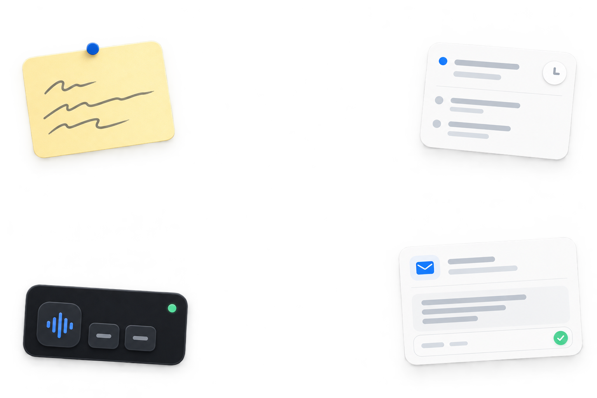

TO MAYAProject updateBest, Nayan
An email with the point up front.
Turn a quick thought into a clear note with a natural tone.
A little more room for your thoughts
Speak in your own words. Get back something clear, ready to send, and still yours.

A quick look inside
Pick a style and tap the mic. The example updates on the spot. Nothing is recorded on this page.
um tell sir I can't come to the exam tomorrow because I feel sick can you make this sound professional
Tap to hear the transformationDear Sir,
I’m feeling unwell and won’t be able to attend tomorrow’s exam. Please let me know what options are available.
Thank you for your understanding.
A voice note can become
Keep your hands and attention on what you’re doing. Let Waky shape the writing.
Turn a quick thought into a clear note with a natural tone.
Group what belongs together into useful notes and lists.
Move between Hindi and English without losing the meaning.
Give an idea a role, a task, and the format you have in mind.
New in 1.4 · Insights
Words per minute, fixes Waky made for you, your streak and the phrases you say most. Counts only, kept on your PC.
“Make sure it’s pixel perfect”CATCHPHRASE
“it’s”MOST USED WORD
“like”MOST CORRECTED WORD
Example numbers. Your real ones stay on your PC: no audio, no full text, and a Reset button in Settings.
Your voice. Your choice.
Use your own Groq key for cloud speech and writing, or download Whisper and keep speech recognition on your PC.
How offline mode works ↗No Waky subscription
Windows 10 and 11 · No account required
Waky is ready when you are